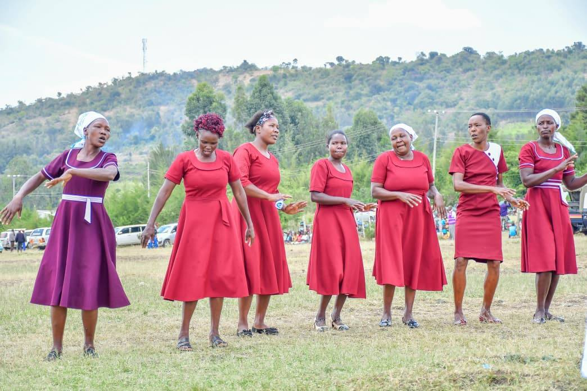

New irrigation initiative expands smallholder productivity — 2,400 farmers benefit
Jan 2026 — Press Release
The county has launched a scalable irrigation initiative across 12 ward zones to improve water access, boost crop resilience and raise incomes for 2,400 smallholder farmers. This program provides technical training, seedlings and equipment, with early results showing a 45% increase in yield per hectare and expanded planting seasons. Farmers now access markets directly, reducing intermediaries and increasing net income by an average of KES 18,500 per season.
Primary healthcare expansion reaches 12 wards — 180,000 residents served
Dec 2025 — County Health Office
Upgrades to primary healthcare facilities and strategic staffing increases have improved service availability for over 180,000 county residents. The initiative reduced average travel times to the nearest facility from 6.2 km to 2.4 km, lowering barriers to preventive and maternal care. A 60% reduction in critical treatment delays has been documented, with particular improvements in under-five and maternal health outcomes. All 12 upgraded facilities now operate with 24/7 emergency triage capacity.
County infrastructure projects generate 5,000+ jobs annually
Nov 2025 — Department of Public Works
Road rehabilitation, water infrastructure and public facility upgrades have created over 5,000 direct employment opportunities, with 65% going to local youth and women. Community members receive training in equipment operation, project management and safety protocols. Priority hiring targets underserved groups and creates pathways to permanent employment in the growing infrastructure sector. Local suppliers now provide 80% of materials, strengthening county economic resilience.
Women cooperatives drive economic growth and financial inclusion
Oct 2025 — Economic Development Office
Expanding support for women-led savings and lending groups has reached 3,200 women entrepreneurs across the county. Cooperative members now access working capital at affordable rates, with average borrowings of KES 25,000 used to expand agricultural ventures, retail businesses and service operations. Access to markets, business training and technology has boosted average member incomes 40% year-over-year. Women-led enterprises now contribute an estimated KES 480 million annually to county economic activity.
Youth skills development reaches 2,800 — digital economy participation growing
Sep 2025 — Ministry of Youth Affairs
Comprehensive youth skills programs in digital literacy, technical trades and entrepreneurship have trained 2,800 county residents aged 18-35. Graduates have achieved a 72% employment placement rate within six months, with many launching digital service businesses, agricultural tech ventures and skilled trades. Partnership with tech hubs has created mentorship networks, with graduates now earning average monthly incomes of KES 22,000. Digital skills training is expanding to all 12 wards by end of 2026.

Community peacebuilding strengthens social cohesion and trust
Aug 2025 — County Peacekeeping Commission
Multi-faith dialogue platforms and community arbitration programs have reduced inter-community disputes by 48% and improved cross-group trust indicators. Over 120 trained community peace ambassadors now operate peer mediation services in all wards. Youth and women are 40% of peacebuilding participants, ensuring younger voices shape conflict resolution. These initiatives have created a foundation for inclusive development conversations and reduced costs of conflict management by KES 12 million annually.